Spring Boot Web 与 HTTP
SpringBootWeb入门
那接下来呢，我们就要来讲解现在企业开发的主流技术 SpringBoot，并基于SpringBoot进行Web程序的开发 。
概述
在没有正式的学习SpringBoot之前，我们要先来了解下什么是Spring。
我们可以打开Spring的官网(https://spring\.io\)，去看一下Spring的简介：Spring makes Java simple。
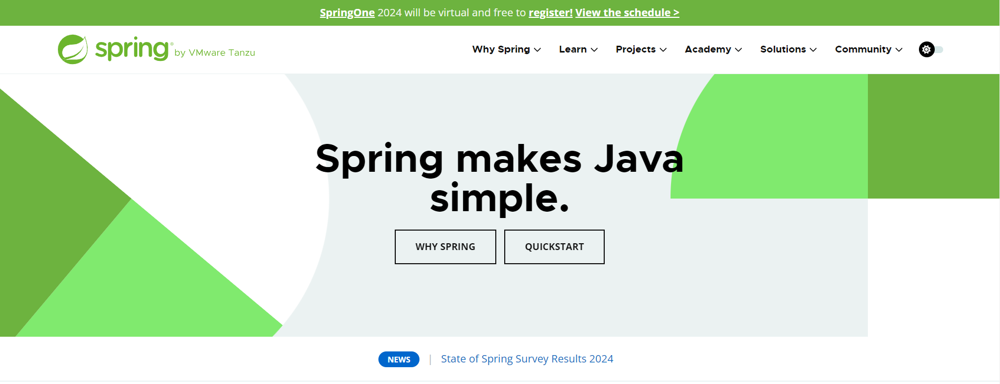
Spring的官方提供很多开源的项目，我们可以点击上面的projects，看到spring家族旗下的项目，按照流行程度排序为：
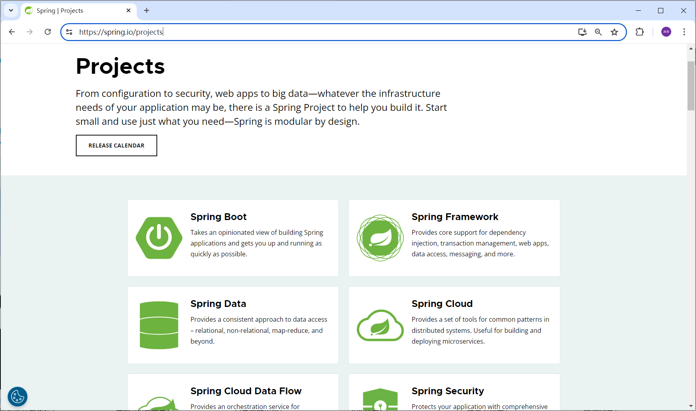
Spring发展到今天已经形成了一种开发生态圈，Spring提供了若干个子项目，每个项目用于完成特定的功能。而我们在项目开发时，一般会偏向于选择这一套spring家族的技术，来解决对应领域的问题，那我们称这一套技术为spring全家桶。
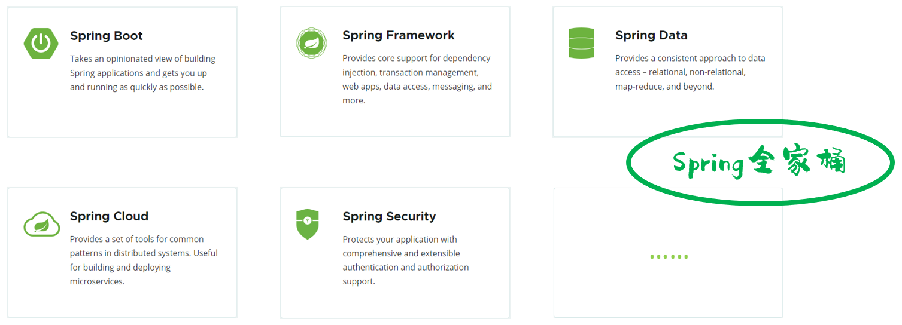
而Spring家族旗下这么多的技术，最基础、最核心的是 SpringFramework。其他的spring家族的技术，都是基于SpringFramework的，SpringFramework中提供很多实用功能，如：依赖注入、事务管理、web开发支持、数据访问、消息服务等等。
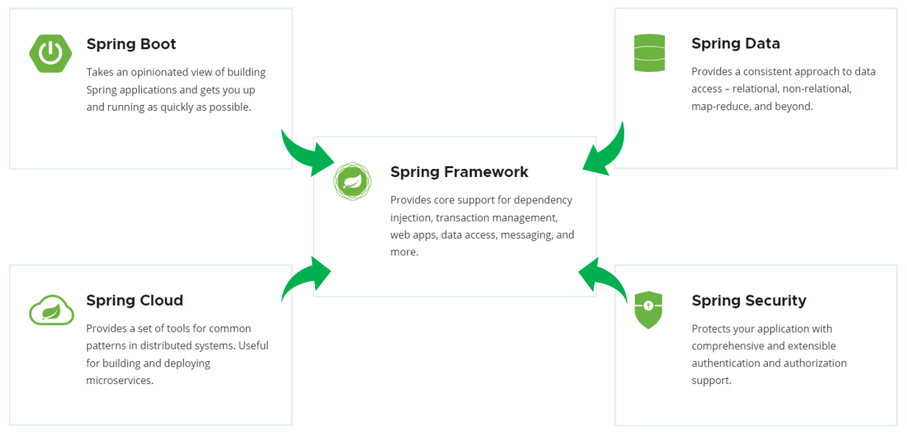
而如果我们在项目中，直接基于SpringFramework进行开发，存在两个问题：
- 配置繁琐
- 入门难度大
所以基于此呢，spring官方推荐我们从另外一个项目开始学习，那就是目前最火爆的SpringBoot。 通过springboot就可以快速的帮我们构建应用程序，所以springboot呢，最大的特点有两个 ：
- 简化配置
- 快速开发
Spring Boot 可以帮助我们非常快速的构建应用程序、简化开发、提高效率 。
而直接基于SpringBoot进行项目构建和开发，不仅是Spring官方推荐的方式，也是现在企业开发的主流。
入门程序
需求
需求：基于SpringBoot的方式开发一个web应用，浏览器发起请求/hello后，给浏览器返回字符串 "Hello xxx ~"。
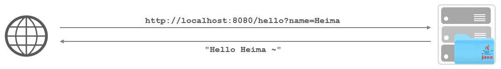
开发步骤
第1步：创建SpringBoot工程，并勾选Web开发相关依赖
第2步：定义HelloController类，添加方法hello，并添加注解
1). 创建SpringBoot工程（需要联网）
基于Spring官方骨架，创建SpringBoot工程。

基本信息描述完毕之后，勾选web开发相关依赖。
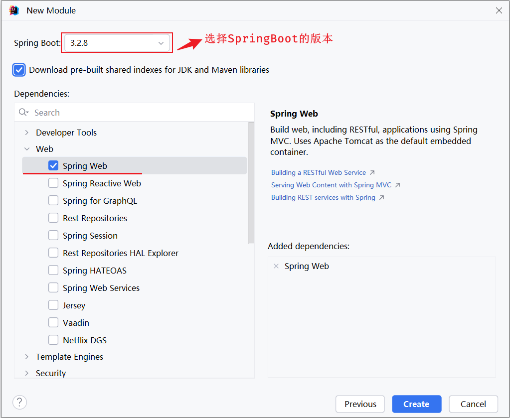
SpringBoot官方提供的脚手架，里面只能够选择SpringBoot的几个最新的版本，如果要选择其他相对低一点的版本，可以在springboot项目创建完毕之后，修改项目的pom.xml文件中的版本号。
点击Create之后，就会联网创建这个SpringBoot工程，创建好之后，结构如下：
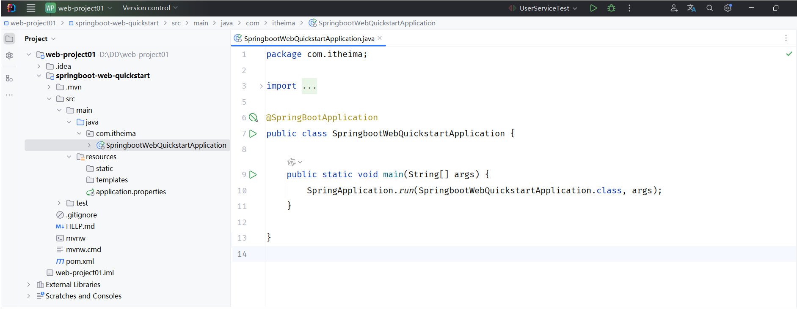
注意：在联网创建过程中，会下载相关资源(请耐心等待)
2). 定义HelloController类，添加方法hello，并添加注解
在com.itheima这个包下新建一个类：HelloController
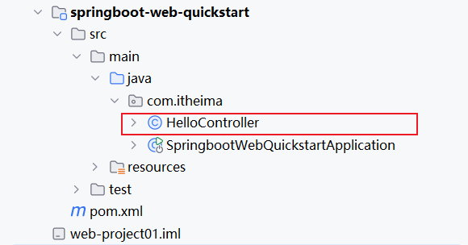
HelloController中的内容，具体如下：
package com.itheima;
import org.springframework.web.bind.annotation.RequestMapping;
import org.springframework.web.bind.annotation.RestController;
@RestController //标识当前类是一个请求处理类
public class HelloController {
@RequestMapping("/hello") //标识请求路径
public String hello(String name){
System.out.println("HelloController ... hello: " + name);
return "Hello " + name;
}
}
3). 运行测试
运行SpringBoot自动生成的引导类 (标识有@SpringBootApplication注解的类)
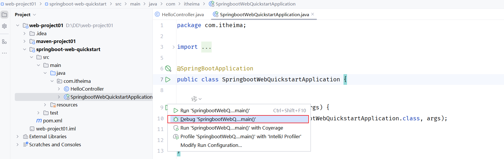
打开浏览器，输入 http://localhost:8080/hello?name=itheima
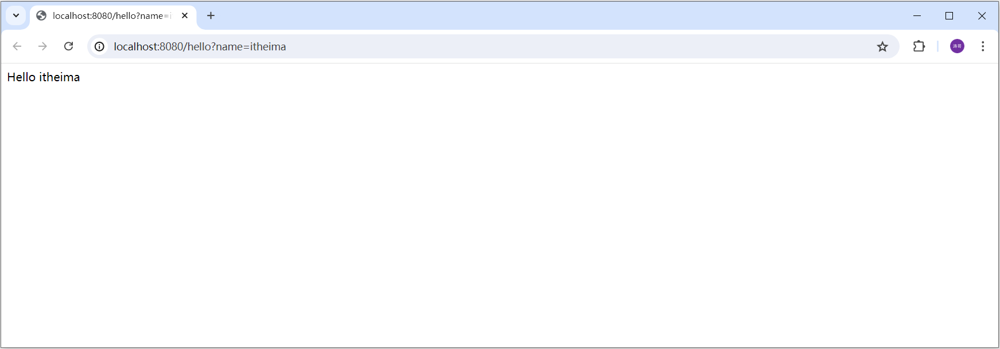
常见问题
创建一个springboot项目时 , 项目支持的脚手架有时会抽风访问不进去 , 直接使用
start.aliyun.com
大伙儿在下来联系的时候，联网基于spring的脚手架创建SpringBoot项目，偶尔可能会因为网内网络的原因，链接不上SpringBoot的脚手架网站，此时会出现如下现象：
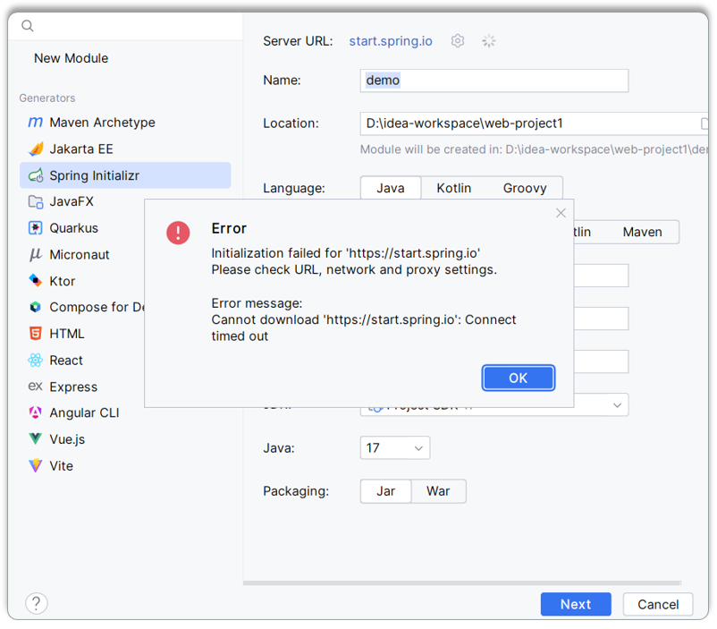
此时可以使用阿里云提供的脚手架，网址为：https://start\.aliyun\.com
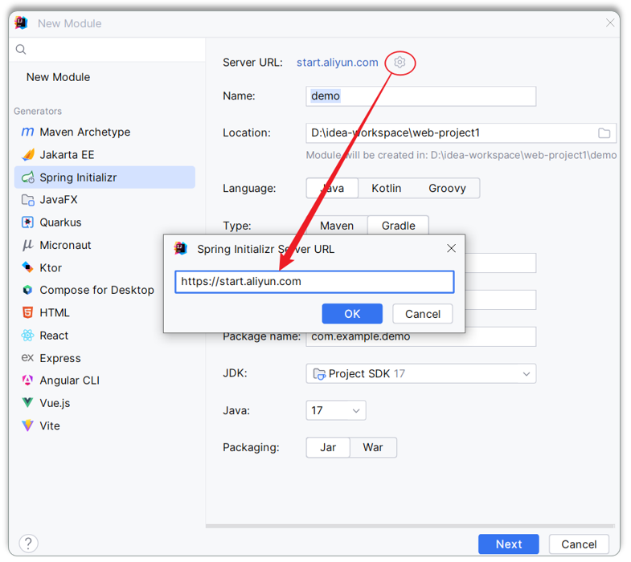
然后按照项目创建的向导，一步一步的创建项目即可。
入门解析
那在上面呢，我们已经完成了SpringBootWeb的入门程序，并且测试通过。 在入门程序中，我们发现，我们只需要一个main方法就可以将web应用启动起来了，然后就可以打开浏览器访问了。
那接下来我们需要明确两个问题：
1). 为什么一个main方法就可以将Web应用启动了？
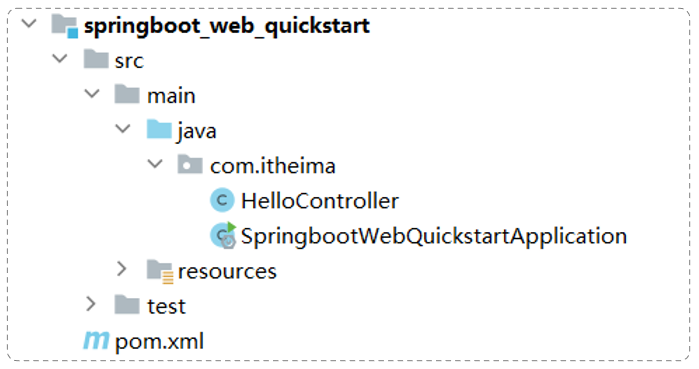
因为我们在创建springboot项目的时候，选择了web开发的
起步依赖
spring-boot-starter-web : 是使用来实现web开发的;
。而spring-boot-starter-web依赖，又依赖了spring-boot-starter-tomcat，
由于maven的依赖传递特性，那么在我们创建的springboot项目中也就已经有了tomcat的依赖，这个其实就是springboot中内嵌的tomcat。
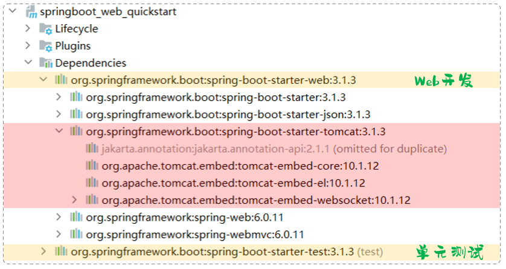
而我们运行引导类中的main方法，其实启动的就是springboot中内嵌的Tomcat服务器。[内嵌的TOMcat服务器] 而我们所开发的项目，也会自动的部署在该tomcat服务器中，并占用8080端口号 。
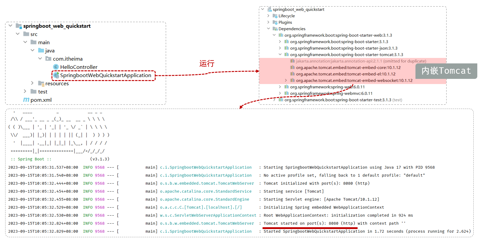
起步依赖：
一种为开发者提供简化配置和集成的机制，使得构建Spring应用程序更加轻松。起步依赖本质上是一组预定义的依赖项集合，它们一起提供了在特定场景下开发Spring应用所需的所有库和配置。
spring-boot-starter-web：包含了web应用开发所需要的常见依赖。
spring-boot-starter-test：包含了单元测试所需要的常见依赖。
官方提供的starter：https://docs.spring.io/spring-boot/docs/3.1.3/reference/htmlsingle/#using.build-systems.starters
HTTP协议
HTTP概述
介绍
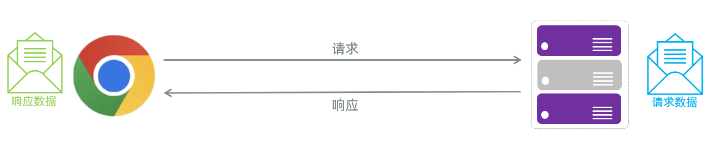
HTTP：Hyper Text Transfer Protocol(超文本传输协议)，规定了浏览器与服务器之间数据传输的规则。
- http是互联网上应用最为广泛的一种网络协议
- http协议要求：浏览器在向服务器发送请求数据时，或是服务器在向浏览器发送响应数据时，都必须按照固定的格式进行数据传输
如果想知道http协议的数据传输格式有哪些，可以打开浏览器，点击F12打开开发者工具，点击Network(网络)来查看
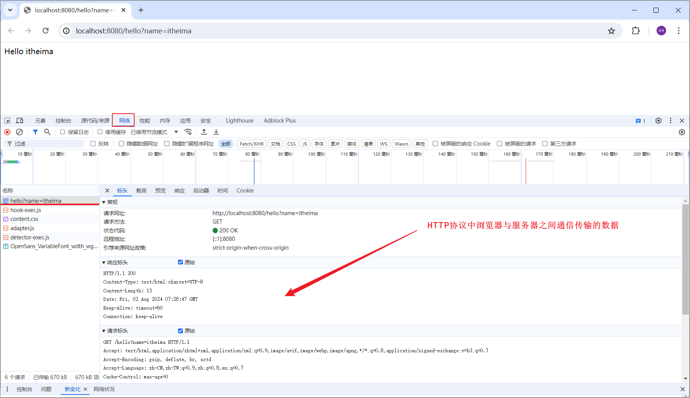
浏览器向服务器进行请求时，服务器按照固定的格式进行解析：
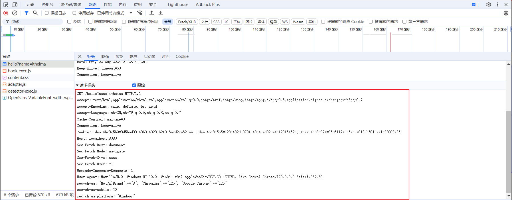
服务器向浏览器进行响应时，浏览器按照固定的格式进行解析：
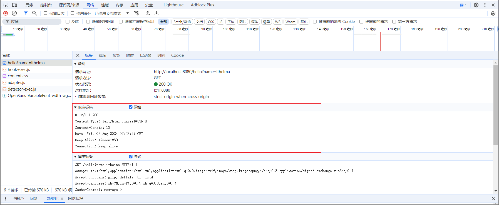
而我们学习HTTP协议，就是来学习请求和响应数据的具体格式内容。
HTTP请求协议
get 向服务器提交数据 , 数据保存在 url 表头中 , 大小会有限制 ;
post 会放置在请求体中去, 大小不会出现限制 ;
介绍
- 请求**协议：**浏览器将数据以请求格式发送到服务器。包括：**请求行、**请求头 、请求体
- GET方式的请求协议：
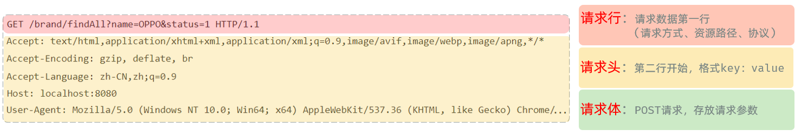
请求行(以上图中红色部分) ：HTTP请求中的第一行数据。由：
请求方式、资源路径、协议/版本组成（之间使用空格分隔）请求方式：GET
资源路径：/brand/findAll?name=OPPO&status=1
请求路径：/brand/findAll
请求参数：name=OPPO&status=1
请求参数是以key=value形式出现
多个请求参数之间使用
&连接请求路径和请求参数之间使用
?连接协议/版本：HTTP/1.1
请求头(以上图中黄色部分) ：第二行开始，上图黄色部分内容就是请求头。格式为key: value形式
http是个无状态的协议，所以在请求头设置浏览器的一些自身信息和想要响应的形式。这样服务器在收到信息后，就可以知道是谁，想干什么了
常见的HTTP请求头有:
请求头 | 含义 |
Host | 表示请求的主机名 |
User-Agent | 浏览器版本。 例如：Chrome浏览器的标识类似Mozilla/5.0 ...Chrome/79 ，IE浏览器的标识类似Mozilla/5.0 (Windows NT ...)like Gecko |
Accept | 表示浏览器能接收的资源类型，如text/*，image/*或者*/*表示所有； |
Accept-Language | 表示浏览器偏好的语言，服务器可以据此返回不同语言的网页； |
Accept-Encoding | 表示浏览器可以支持的压缩类型，例如gzip, deflate等。 |
Content-Type | 请求主体的数据类型 |
Content-Length | 数据主体的大小（单位：字节） |
举例说明：服务端可以根据请求头中的内容来获取客户端的相关信息，有了这些信息服务端就可以处理不同的业务需求。
比如:
不同浏览器解析HTML和CSS标签的结果会有不一致，所以就会导致相同的代码在不同的浏览器会出现不同的效果
服务端根据客户端请求头中的数据获取到客户端的浏览器类型，就可以根据不同的浏览器设置不同的代码来达到一致的效果（这就是我们常说的浏览器兼容问题）
请求体 ：存储请求参数
GET请求的请求参数在请求行中，故不需要设置请求体
POST方式的请求协议：
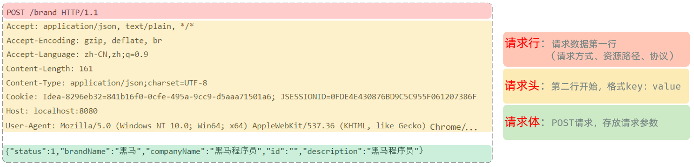
请求行(以上图中红色部分)：包含请求方式、资源路径、协议/版本
请求方式：POST
资源路径：/brand
协议/版本：HTTP/1.1
请求头(以上图中黄色部分)
请求体(以上图中绿色部分) ：存储请求参数
请求体和请求头之间是有一个空行隔开（作用：用于标记请求头结束）
GET请求和POST请求的区别：
区别方式 | GET请求 | POST请求 |
请求参数 | 请求参数在请求行中。<br/>例：/brand/findAll?name=OPPO&status=1 | 请求参数在请求体中 |
请求参数长度 | 请求参数长度有限制(浏览器不同限制也不同) | 请求参数长度没有限制 |
安全性 | 安全性低。原因：请求参数暴露在浏览器地址栏中。 | 安全性相对高 |
获取请求数据 ( 客户端产生 , 服务端获取 ) request(回应).都是get(获取到已设定好的数据) ;
获取请求数据是从 /request 中获取到的数据;
Web服务器（Tomcat）对HTTP协议的请求数据进行解析，并进行了封装(HttpServletRequest)，并在调用Controller方法的时候传递给了该方法。这样，就使得程序员不必直接对协议进行操作，让Web开发更加便捷。
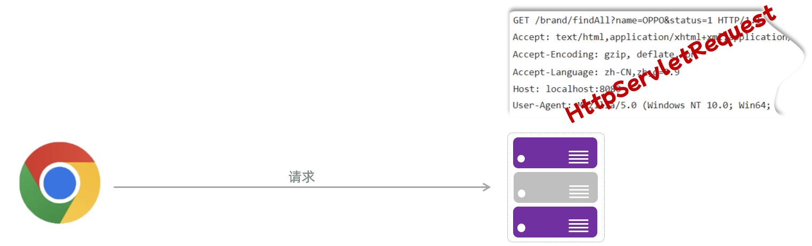
代码演示如下：
@RestController //实现一个请求批量处理
public class RequestController {
/**
* 请求路径 http://localhost:8080/request?name=Tom&age=18
* @param request
* @return
*/
@RequestMapping("/request")
//传入的请求头的形参 : HttpServletRequest request ;
//传入的形参类型要注意 , HttpServletRequest ;
public String request(HttpServletRequest request){
//1.获取请求参数 name, age
String name = request.getParameter("name");
String age = request.getParameter("age");
System.out.println("name = " + name + ", age = " + age);
//2.获取请求路径
String uri = request.getRequestURI();
String url = request.getRequestURL().toString();
System.out.println("uri = " + uri);
System.out.println("url = " + url);
//3.获取请求方式
String method = request.getMethod();
System.out.println("method = " + method);
//4.获取请求头
String header = request.getHeader("User-Agent");
System.out.println("header = " + header);
return "request success";
}
}
最终输出内容如下所示：
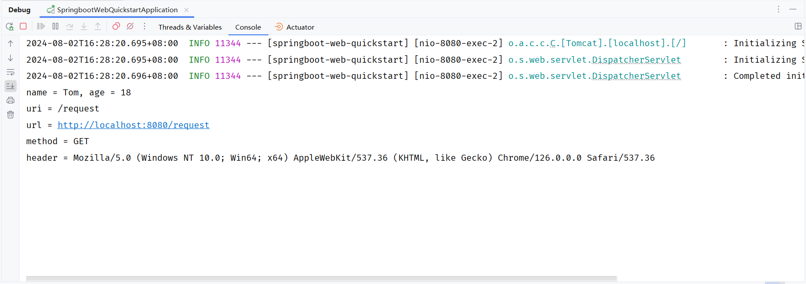
设置响应数据 ( 服务器产生 , 客户端获取 ) 主要都是使用response(回应).set创建元素 ;
获取到的数据放置在 /response 下来获取到数据 ;
Web服务器对HTTP协议的响应数据进行了封装(HttpServletResponse)，并在调用Controller方法的时候传递给了该方法。这样，就使得程序员不必直接对协议进行操作，让Web开发更加便捷。
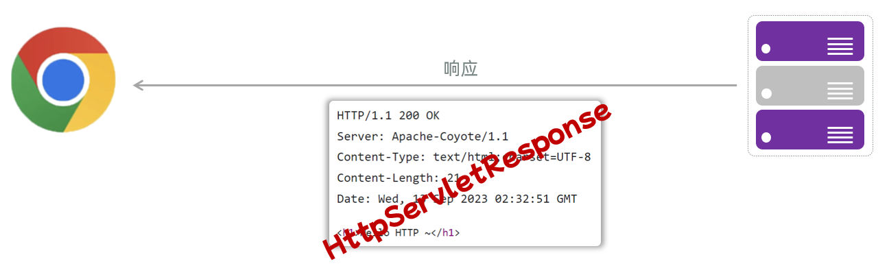
代码演示：
package com.itheima;
import jakarta.servlet.http.HttpServletResponse;
import org.springframework.http.ResponseEntity;
import org.springframework.web.bind.annotation.RequestMapping;
import org.springframework.web.bind.annotation.RestController;
import java.io.IOException;
@RestController
public class ResponseController {
@RequestMapping("/response")
设置传入的形参类型为 HttpServletResponse 注意形参的类型 ;
public void response(HttpServletResponse response) throws IOException {
//1.设置响应状态码
response.setStatus(401);
//2.设置响应头
response.setHeader("name","itcast");
//3.设置响应体
response.setContentType("text/html;charset=utf-8");
response.setCharacterEncoding("utf-8");
response.getWriter().write("<h1>hello response</h1>");
}
@RequestMapping("/response2")
public ResponseEntity<String> response2(HttpServletResponse response) throws IOException {
return ResponseEntity
.status(401)
.header("name","itcast")
.body("<h1>hello response</h1>");
}
}
浏览器访问测试：
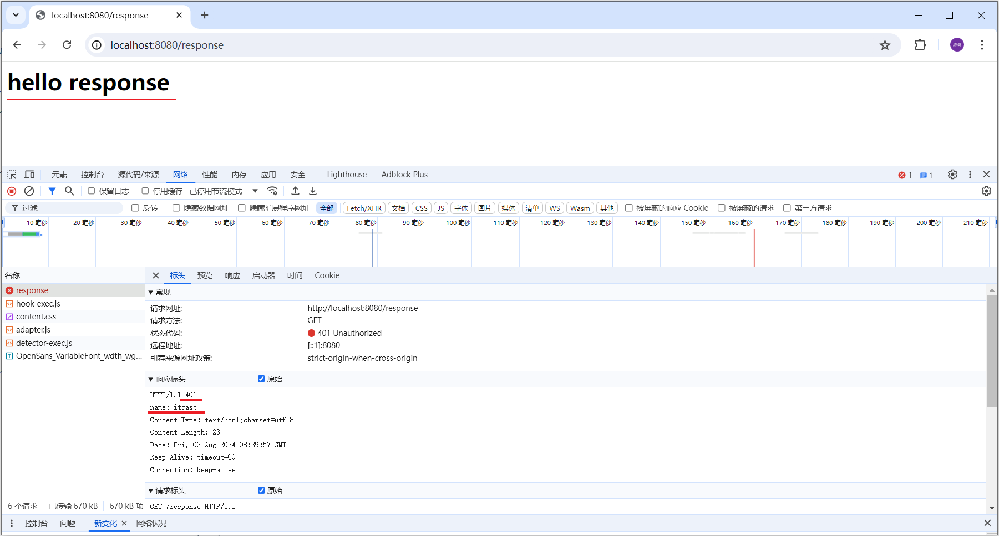
响应状态码 和 响应头如果没有特殊要求的话，通常不手动设定。服务器会根据请求处理的逻辑，自动设置响应状态码和响应头。
HTTP响应协议
格式介绍
- 响应协议：服务器将数据以响应格式返回给浏览器。包括：响应行 、响应头 、响应体
- 发生1 时 : SocketWeb 长连接响应 ;
- 发生 3 时 : https协议使用http访问, 会出现重定向 ;
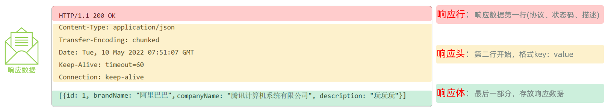
响应行(以上图中红色部分)：响应数据的第一行。响应行由
协议及版本、响应状态码、状态码描述组成协议/版本：HTTP/1.1
响应状态码：200
状态码描述：OK
响应头(以上图中黄色部分)：响应数据的第二行开始。格式为key：value形式
http是个无状态的协议，所以可以在请求头和响应头中设置一些信息和想要执行的动作，这样，对方在收到信息后，就可以知道你是谁，你想干什么
常见的HTTP响应头有:
Content-Type：表示该响应内容的类型，例如text/html，image/jpeg ；
Content-Length：表示该响应内容的长度（字节数）；
Content-Encoding：表示该响应压缩算法，例如gzip ；
Cache-Control：指示客户端应如何缓存，例如max-age=300表示可以最多缓存300秒 ;
Set-Cookie: 告诉浏览器为当前页面所在的域设置cookie ;
响应体(以上图中绿色部分)： 响应数据的最后一部分。存储响应的数据
响应体和响应头之间有一个空行隔开（作用：用于标记响应头结束）
pringBootWeb案例
需求说明
需求：基于SpringBoot开发web程序，完成用户列表的渲染展示
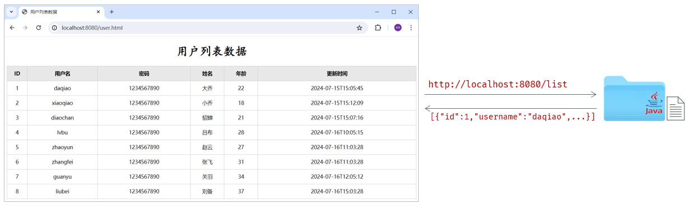
当在浏览器地址栏，访问前端静态页面（http://localhost:8080/usre\.html）后，在前端页面上，会发送ajax请求，请求服务端（http://localhost:8080/list），服务端程序加载 user.txt 文件中的数据，读取出来后最终给前端页面响应json格式的数据，前端页面再将数据渲染展示在表格中。
代码实现
1). 准备工作：再创建一个SpringBoot工程，并勾选web依赖、lombok依赖。
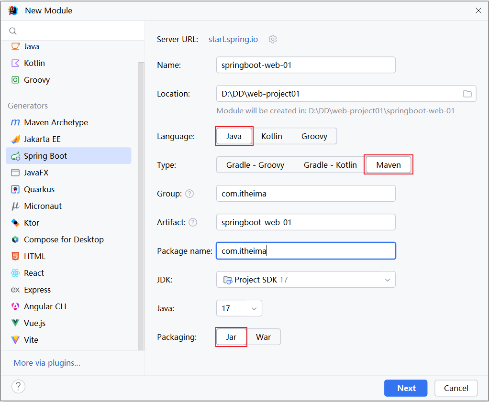
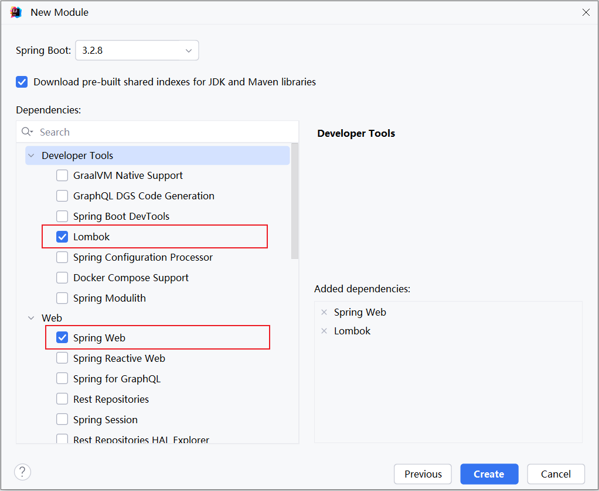
2). 准备工作：引入资料中准备好的数据文件user.txt，以及static下的前端静态页面
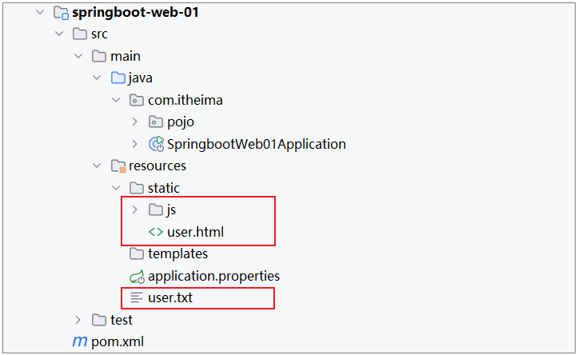
这些文件，在提供的资料中，已经提供了直接导入进来即可。
3). 准备工作：定义封装用户信息的实体类。
在 com.itheima 下再定义一个包 pojo，专门用来存放实体类。 在该包下定义一个实体类User：
package com.itheima.pojo;
import lombok.AllArgsConstructor;
import lombok.Data;
import lombok.NoArgsConstructor;
import java.time.LocalDateTime;
/**
* 封装用户信息
*/
@Data
@NoArgsConstructor
@AllArgsConstructor
public class User {
private Integer id;
private String username;
private String password;
private String name;
private Integer age;
private LocalDateTime updateTime;
}
3). 开发服务端程序，接收请求，读取文本数据并响应
由于在案例中，需要读取文本中的数据，并且还需要将对象转为json格式，所以这里呢，我们在项目中再引入一个非常常用的工具包hutool。 然后调用里面的工具类，就可以非常方便快捷的完成业务操作。
pom.xml中引入依赖
<dependency>
<groupId>cn.hutool</groupId>
<artifactId>hutool-all</artifactId>
<version>5.8.27</version>
</dependency>
- 在
com.itheima包下新建一个子包controller，在其中创建一个UserController
import cn.hutool.core.io.IoUtil;
import cn.hutool.json.JSONConfig;
import cn.hutool.json.JSONUtil;
import com.itheima.pojo.User;
import org.springframework.web.bind.annotation.RequestMapping;
import org.springframework.web.bind.annotation.RestController;
import java.io.InputStream;
import java.nio.charset.StandardCharsets;
import java.time.LocalDateTime;
import java.time.format.DateTimeFormatter;
import java.util.ArrayList;
import java.util.List;
import java.util.stream.Collectors;
@RestController
public class UserController {
@RequestMapping("/list")
public String list(){
//1.加载并读取文件
InputStream in = this.getClass().getClassLoader().getResourceAsStream("user.txt");
ArrayList<String> lines = IoUtil.readLines(in, StandardCharsets.UTF_8, new ArrayList<>());
//2.解析数据，封装成对象 --> 集合
List<User> userList = lines.stream().map(line -> { //这里map是方法 , 实现映射
String[] parts = line.split(",");
Integer id = Integer.parseInt(parts[0]);
String username = parts[1];
String password = parts[2];
String name = parts[3];
Integer age = Integer.parseInt(parts[4]);
LocalDateTime updateTime = LocalDateTime.parse(parts[5], DateTimeFormatter.ofPattern("yyyy-MM-dd HH:mm:ss"));
return new User(id, username, password, name, age, updateTime);
}).collect(Collectors.toList());
//3.响应数据
//return JSONUtil.toJsonStr(userList, JSONConfig.create().setDateFormat("yyyy-MM-dd HH:mm:ss"));
return userList;
}
}
4). 启动服务测试**，访问：**http://localhost:8080/user\.html
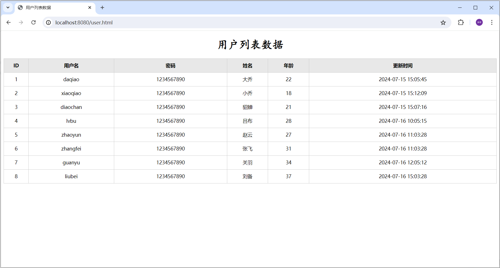
返回的集合之所以可以转化为Json , 是因为@RestController注解底层注解 @Controller + 注解@ResponseBody 实现 ;
@ResponseBody :
将controlller返回值直接作为http中的响应体的数据直接响应 ; 若是controller是对象 / 集合 会先转化为 json 文件;
前面我们学习过HTTL协议的交互方式：请求响应模式（有请求就有响应）。那么Controller程序呢，除了接收请求外，还可以进行响应。
在我们前面所编写的controller方法中，都已经设置了响应数据。
controller方法中的return的结果，怎么就可以响应给浏览器呢？
答案：使用@ResponseBody注解
**@ResponseBody注解：**
- 类型：方法注解、类注解
- 位置：书写在Controller方法上或类上
- 作用：将方法返回值直接响应给浏览器，如果返回值类型是实体对象/集合，将会转换为JSON格式后在响应给浏览器
但是在我们所书写的Controller中，只在类上添加了@RestController注解、方法添加了@RequestMapping注解，并没有使用@ResponseBody注解，怎么给浏览器响应呢？
这是因为，我们在类上加了@RestController注解，而这个注解是由两个注解组合起来的，分别是：@Controller 、@ResponseBody。 那也就意味着，我们在类上已经添加了@ResponseBody注解了，而一旦在类上加了@ResponseBody注解，就相当于该类所有的方法中都已经添加了@ResponseBody注解。
提示：前后端分离的项目中，一般直接在请求处理类上加@RestController注解，就无需在方法上加@ResponseBody注解了。
问题分析
上述案例的功能，我们虽然已经实现，但是呢，我们会发现案例中：解析文本文件中的数据，处理数据的逻辑代码，给页面响应的代码全部都堆积在一起了，全部都写在controller方法中了。
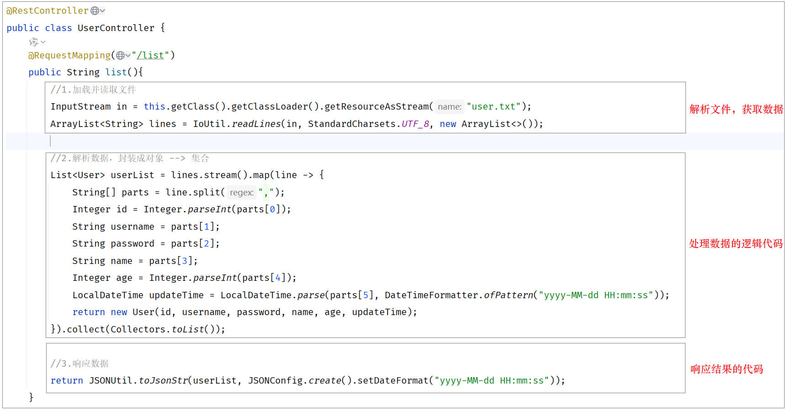
当前程序的这个业务逻辑还是比较简单的，如果业务逻辑再稍微复杂一点，我们会看到Controller方法的代码量就很大了。
- 当我们要修改操作数据部分的代码，需要改动Controller
- 当我们要完善逻辑处理部分的代码，需要改动Controller
- 当我们需要修改数据响应的代码，还是需要改动Controller
这样呢，就会造成我们整个工程代码的复用性比较差，而且代码难以维护。 那如何解决这个问题呢？其实在现在的开发中，有非常成熟的解决思路，那就是分层开发。
分层解耦
三层架构
介绍
在我们进行程序设计以及程序开发时，尽可能让每一个接口、类、方法的职责更单一些（单一职责原则）。
单一职责原则：一个类或一个方法，就只做一件事情，只管一块功能。
这样就可以让类、接口、方法的复杂度更低，可读性更强，扩展性更好，也更利于后期的维护。
我们之前开发的程序呢，并不满足单一职责原则。下面我们来分析下之前的程序：
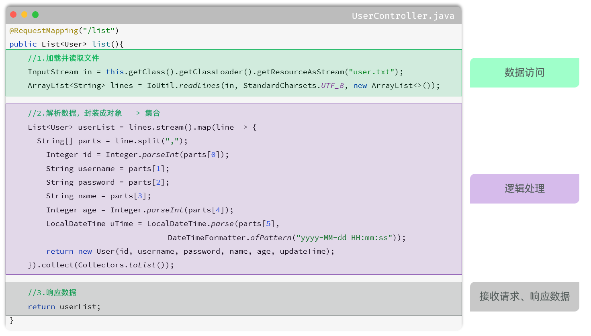
那其实我们上述案例的处理逻辑呢，从组成上看可以分为三个部分：
- 数据访问：负责业务数据的维护操作，包括增、删、改、查等操作。
- 逻辑处理：负责业务逻辑处理的代码。
- 请求处理、响应数据：负责，接收页面的请求，给页面响应数据。
按照上述的三个组成部分，在我们项目开发中呢，可以将代码分为三层，如图所示：
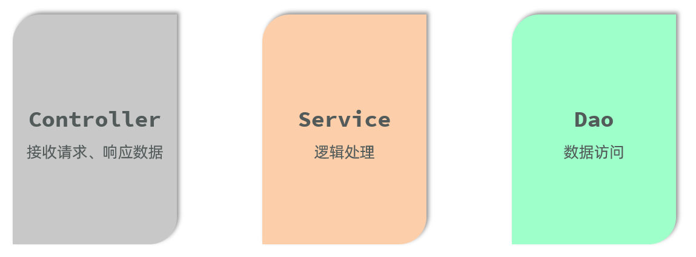
- Controller：控制层。接收前端发送的请求，对请求进行处理，并响应数据。
- Service：业务逻辑层。处理具体的业务逻辑。
- Dao：数据访问层(Data Access Object)，也称为持久层。负责数据访问操作，包括数据的增、删、改、查。
基于三层架构的程序执行流程，如图所示：
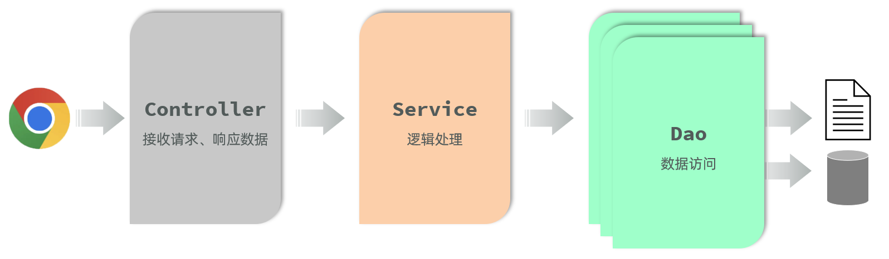
- 前端发起的请求，由Controller层接收（Controller响应数据给前端）
- Controller层调用Service层来进行逻辑处理（Service层处理完后，把处理结果返回给Controller层）
- Serivce层调用Dao层（逻辑处理过程中需要用到的一些数据要从Dao层获取）
- Dao层操作文件中的数据（Dao拿到的数据会返回给Service层 ) ; 可以设计出不同的实现 : 区别在于数据的获取方式 ; 后期实现靠写一份统一的接口实现是靠底下配合这一统一接口 , 实现面向接口编程 ;
思考：按照三层架构的思想，如果要对业务逻辑(Service层)进行变更，会影响到Controller层和Dao层吗？
答案：不会影响。 （程序的扩展性、维护性变得更好了）
代码拆分
我们使用三层架构思想，来改造下之前的程序：
- 控制层包名：
com.itheima.controller - 业务逻辑层包名：
com.itheima.service - 数据访问层包名：
com.itheima.dao
1). 控制层：接收前端发送的请求，对请求进行处理，并响应数据
在 com.itheima.controller 中创建UserController类，代码如下：
package com.itheima.controller;
import com.itheima.pojo.User;
import com.itheima.service.UserService;
import com.itheima.service.impl.UserServiceImpl;
import org.springframework.web.bind.annotation.RequestMapping;
import org.springframework.web.bind.annotation.RestController;
import java.util.List;
@RestController
public class UserController {
private UserService userService = new UserServiceImpl();
@RequestMapping("/list")
public List<User> list(){
//1.调用Service
List<User> userList = userService.findAll();
//2.响应数据
return userList;
}
}
**2). 业务逻辑层：**处理具体的业务逻辑
分开获取到的字符段 , 实现批处理整合成对象 ;
在 com.itheima.service中创建UserSerivce接口，代码如下：
package com.itheima.service;
import com.itheima.pojo.User;
import java.util.List;
public interface UserService {
public List<User> findAll();
}
在 com.itheima.service.``impl 中创建UserSerivceImpl接口，代码如下：
package com.itheima.service.impl;
import com.itheima.dao.UserDao;
import com.itheima.dao.impl.UserDaoImpl;
import com.itheima.pojo.User;
import com.itheima.service.UserService;
import java.time.LocalDateTime;
import java.time.format.DateTimeFormatter;
import java.util.List;
import java.util.stream.Collectors;
public class UserServiceImpl implements UserService {
private UserDao userDao = new UserDaoImpl(); //从dao中实现的数据转接到service层
@Override
public List<User> findAll() {
List<String> lines = userDao.findAll();
List<User> userList = lines.stream().map(line -> { //map : 方法,实现映射,转化元素形式
String[] parts = line.split(",");
Integer id = Integer.parseInt(parts[0]);
String username = parts[1];
String password = parts[2];
String name = parts[3];
Integer age = Integer.parseInt(parts[4]);
LocalDateTime updateTime = LocalDateTime.parse(parts[5], DateTimeFormatter.ofPattern("yyyy-MM-dd HH:mm:ss"));
return new User(id, username, password, name, age, updateTime);
}).collect(Collectors.toList());
return userList;
}
}
3). 数据访问层：负责数据的访问操作，包含数据的增、删、改、查
在 com.itheima.dao中创建UserDao接口，代码如下：
package com.itheima.dao;
import java.util.List;
public interface UserDao {
public List<String> findAll(); //面向接口编程 ;
}
在 com.itheima.dao.impl 中创建UserDaoImpl接口，代码如下：本地调取文件资源
package com.itheima.dao.impl;
import cn.hutool.core.io.IoUtil;
import com.itheima.dao.UserDao;
import java.io.InputStream;
import java.nio.charset.StandardCharsets;
import java.util.ArrayList;
import java.util.List;
public class UserDaoImpl implements UserDao {
@Override //重写接口
public List<String> findAll() {
在启动编译之后 , res下的 main , resource 会到一个class文件下
InputStream in = this.getClass() //获取对象的Class对象 ;
.getClassLoader() //获取该类的类加载器 ;
.getResourceAsStream("user.txt"); //类路径下使用输入流查询读取文件中的内容;
ArrayList<String> lines = IoUtil.readLines(in, StandardCharsets.UTF_8, new ArrayList<>());
return lines;
}
}
具体的请求调用流程：
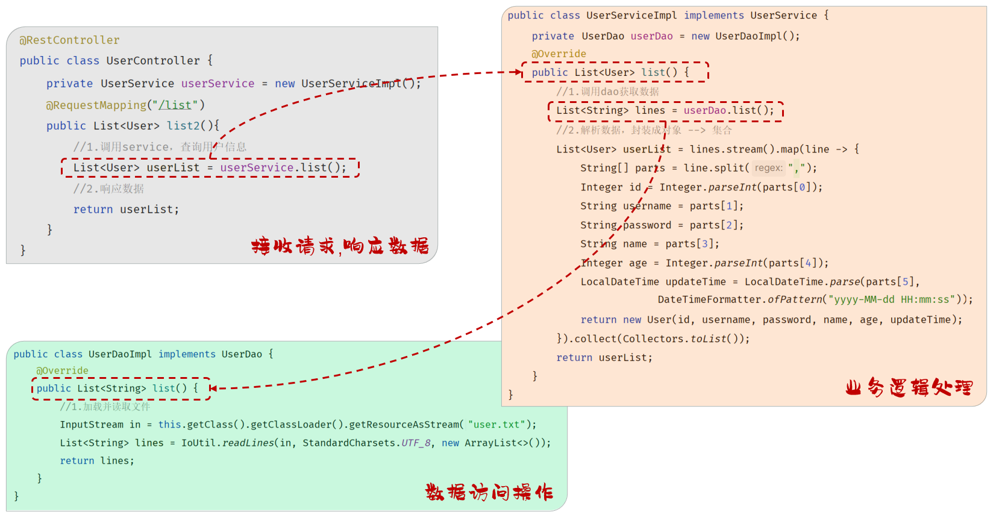
三层架构的好处：
- 复用性强
- 便于维护
- 利用扩展
分层解耦
问题分析
由于我们现在在程序中，需要什么对象，直接new一个对象 new UserServiceImpl() 。
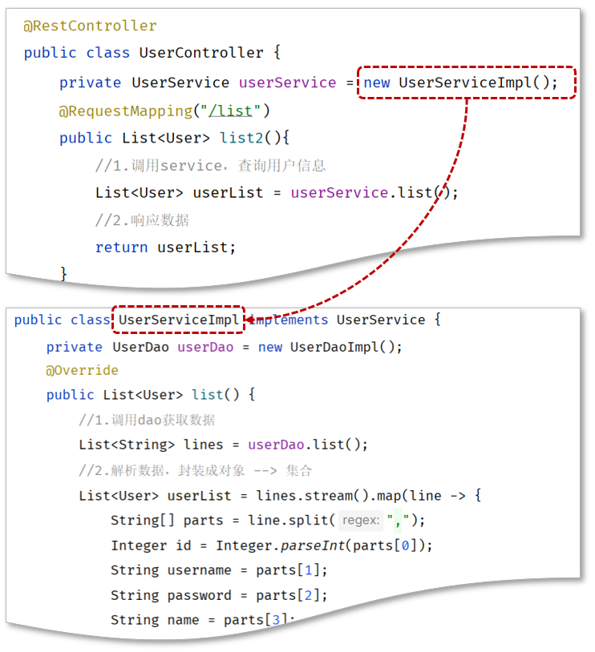
如果说我们需要更换实现类，比如由于业务的变更，UserServiceImpl 不能满足现有的业务需求，我们需要切换为 UserServiceImpl2 这套实现，就需要修改Contorller的代码，需要创建 UserServiceImpl2 的实现new UserServiceImpl2() 。

Service中调用Dao，也是类似的问题。这种呢，我们就称之为层与层之间 耦合 了。 那什么是耦合呢 ？
首先需要了解软件开发涉及到的两个概念：内聚和耦合。
- **内聚：**软件中各个功能模块内部的功能联系。
- **耦合：**衡量软件中各个层/模块之间的依赖、关联的程度。
软件设计原则：高内聚低耦合。
高内聚**：**指的是一个模块中各个元素之间的联系的紧密程度，如果各个元素(语句、程序段)之间的联系程度越高，则内聚性越高，即 "高内聚"。
**低耦合：**指的是软件中各个层、模块之间的依赖关联程序越低越好。
目前层与层之间是存在耦合的，Controller耦合了Service、Service耦合了Dao。而 高内聚、低耦合的目的是使程序模块的可重用性、移植性大大增强。
那最终我们的目标呢，就是做到层与层之间，尽可能的降低耦合，甚至解除耦合。
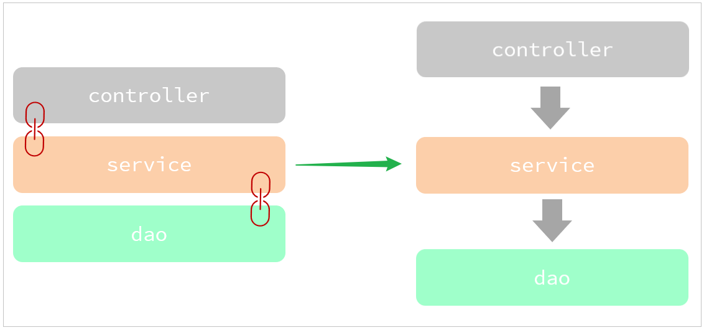
解耦思路
之前我们在编写代码时，需要什么对象，就直接new一个就可以了。 这种做法呢，层与层之间代码就耦合了，当service层的实现变了之后， 我们还需要修改controller层的代码。
那应该怎么解耦呢？
1). 首先不能在EmpController中使用new对象。代码如下：
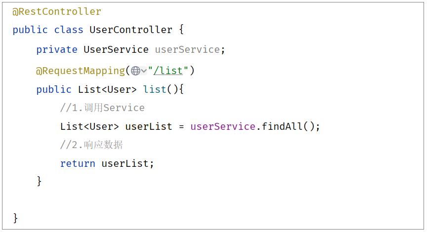
此时，就存在另一个问题了，不能new，就意味着没有业务层对象（程序运行就报错），怎么办呢?
我们的解决思路是：
- 提供一个容器，容器中存储一些对象(例：UserService对象)
- Controller程序从容器中获取UserService类型的对象
2). 将要用到的对象交给一个容器管理。
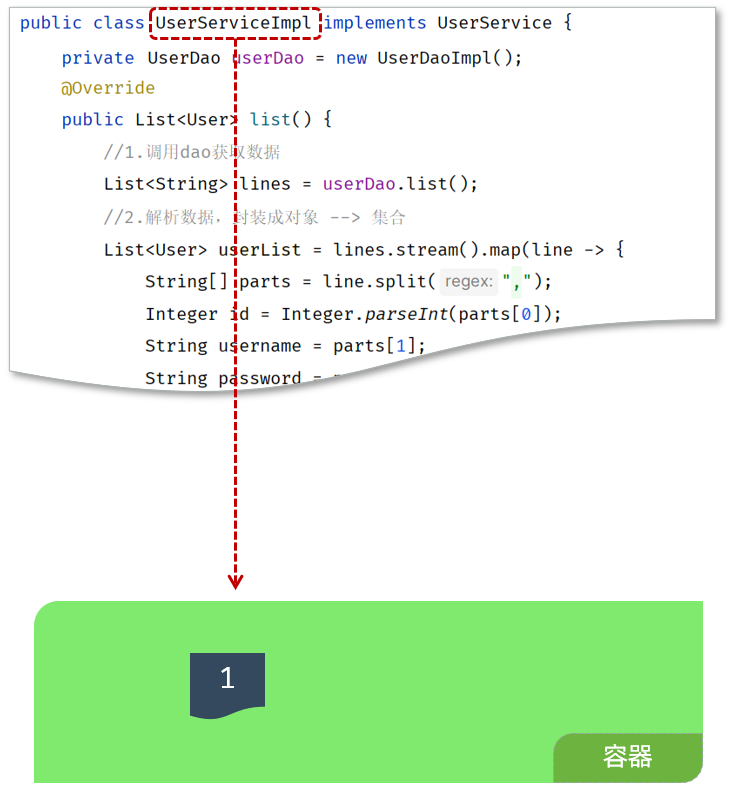
3). 应用程序中用到这个对象，就直接从容器中获取
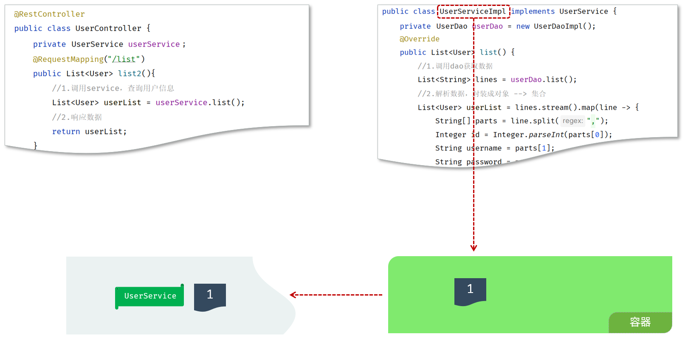
那问题来了，我们如何将对象交给容器管理呢？ 程序运行时，容器如何为程序提供依赖的对象呢？
我们想要实现上述解耦操作，就涉及到Spring中的两个核心概念：
控制反转： Inversion Of Control，简称IOC。对象的创建控制权由程序自身转移到外部（容器），这种思想称为控制反转。
对象的创建权由程序员主动创建转移到容器(由容器创建、管理对象)。这个容器称为：IOC容器或Spring容器。
依赖注入： Dependency Injection，简称DI。容器为应用程序提供运行时，所依赖的资源，称之为依赖注入。
程序运行时需要某个资源，此时容器就为其提供这个资源。
例：EmpController程序运行时需要EmpService对象，Spring容器就为其提供并注入EmpService对象。
**bean对象：**IOC容器中创建、管理的对象，称之为：bean对象。
IOC&DI入门
1). 将Service及Dao层的实现类，交给IOC容器管理
在实现类加上 @Component 注解，就代表把当前类产生的对象交给IOC容器管理。
A. UserDaoImpl
@Component //自动将类提交个 ICO 容器实现控制转化
public class UserDaoImpl implements UserDao {
@Override
public List<String> findAll() {
InputStream in = this.getClass().getClassLoader().getResourceAsStream("user.txt");
ArrayList<String> lines = IoUtil.readLines(in, StandardCharsets.UTF_8, new ArrayList<>());
return lines;
}
}
B. UserServiceImpl
@Component
public class UserServiceImpl implements UserService {
private UserDao userDao;
@Override
public List<User> findAll() {
List<String> lines = userDao.findAll();
List<User> userList = lines.stream().map(line -> {
String[] parts = line.split(",");
Integer id = Integer.parseInt(parts[0]);
String username = parts[1];
String password = parts[2];
String name = parts[3];
Integer age = Integer.parseInt(parts[4]);
LocalDateTime updateTime = LocalDateTime.parse(parts[5], DateTimeFormatter.ofPattern("yyyy-MM-dd HH:mm:ss"));
return new User(id, username, password, name, age, updateTime);
}).collect(Collectors.toList());
return userList;
}
}
2). 为Controller 及 Service注入运行时所依赖的对象
A. UserServiceImpl
@Component
public class UserServiceImpl implements UserService {
@Autowired //应用程序运行时,自动查询该类型下的bean对象,并赋值给该成员变量;
private UserDao userDao;
@Override
public List<User> findAll() {
List<String> lines = userDao.findAll();
List<User> userList = lines.stream().map(line -> {
String[] parts = line.split(",");
Integer id = Integer.parseInt(parts[0]);
String username = parts[1];
String password = parts[2];
String name = parts[3];
Integer age = Integer.parseInt(parts[4]);
LocalDateTime updateTime = LocalDateTime.parse(parts[5], DateTimeFormatter.ofPattern("yyyy-MM-dd HH:mm:ss"));
return new User(id, username, password, name, age, updateTime);
}).collect(Collectors.toList());
return userList;
}
}
B. UserController
@RestController
public class UserController {
@Autowired
private UserService userService;
@RequestMapping("/list") //客户端访问获取数据的地址 ;
public List<User> list(){
//1.调用Service
List<User> userList = userService.findAll();
//2.响应数据
return userList;
}
}
启动服务，运行测试。 打开浏览器，地址栏直接访问：http://localhost:8080/user\.html 。 依然正常访问，就说明入门程序完成了。 已经完成了层与层之间的解耦。
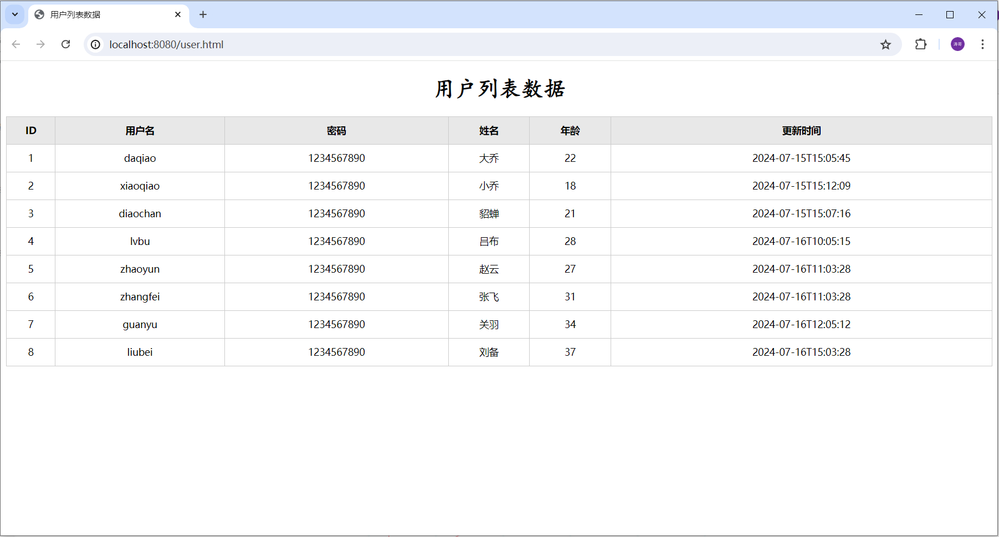
IOC详解
通过IOC和DI的入门程序呢，我们已经基本了解了IOC和DI的基础操作。接下来呢，我们学习下IOC控制反转和DI依赖注入的细节。
4.3.4.1 Bean的声明
前面我们提到IOC控制反转，就是将对象的控制权交给Spring的IOC容器，由IOC容器创建及管理对象。IOC容器创建的对象称为bean对象。
在之前的入门案例中，要把某个对象交给IOC容器管理，需要在类上添加一个注解：@Component
而Spring框架为了更好的标识web应用程序开发当中，bean对象到底归属于哪一层，又提供了@Component的衍生注解：
注解 | 说明 | 位置 |
@Component | 声明bean的基础注解 | 不属于以下三类时，用此注解 |
@Controller(传统) / @RestController (现代) | @Component的衍生注解 | 标注在控制层类上 |
@Service | @Component的衍生注解 | 标注在业务层类上 |
@Repository | @Component的衍生注解 | 标注在数据访问层类上（由于与mybatis整合，用的少） |
那么此时，我们就可以使用 @Service 注解声明Service层的bean。 使用 @Repository 注解声明Dao层的bean , 后面使用basis持久框架 后期创建的注释会改变 。 代码实现如下：
Service层:
@Service
public class UserServiceImpl implements UserService {
private UserDao userDao;
@Override
public List<User> findAll() {
List<String> lines = userDao.findAll();
List<User> userList = lines.stream().map(line -> {
String[] parts = line.split(",");
Integer id = Integer.parseInt(parts[0]);
String username = parts[1];
String password = parts[2];
String name = parts[3];
Integer age = Integer.parseInt(parts[4]);
LocalDateTime updateTime = LocalDateTime.parse(parts[5], DateTimeFormatter.ofPattern("yyyy-MM-dd HH:mm:ss"));
return new User(id, username, password, name, age, updateTime);
}).collect(Collectors.toList());
return userList;
}
}
Dao层:
@Repository //底层封装了component
public class UserDaoImpl implements UserDao {
@Override
public List<String> findAll() {
InputStream in = this.getClass().getClassLoader().getResourceAsStream("user.txt");
ArrayList<String> lines = IoUtil.readLines(in, StandardCharsets.UTF_8, new ArrayList<>());
return lines;
}
}
注意1：声明bean的时候，可以通过注解的value属性指定bean的名字，如果没有指定，默认为类名首字母小写。
注意2：使用以上四个注解都可以声明bean，但是在springboot集成web开发中，声明控制器bean只能用@Controller , 不可以直接使用 Conpoment。
4.3.4.2 组件扫描
问题：使用前面学习的四个注解声明的bean，一定会生效吗？
答案：不一定。（原因：bean想要生效，还需要被组件扫描）
- 前面声明bean的四大注解，要想生效，还需要被组件扫描注解
@ComponentScan扫描。 - 该注解虽然没有显式配置，但是实际上已经包含在了启动类声明注解
- 启动类的底层实现 在
@SpringBootApplication中，( 1.标记这是一个配置类 2. 开启自动配置 3.开启组件扫描 ) ; - 会有 @ComponentScan 默认扫描的范围是启动类所在包及其子包。
- 若出现不能归属于三层架构下的任意一层 , 直接使用component来实现控制反转 ;
- 注意一定要把启动类放置在项目的文件包 的同级别下来实现运行 ;
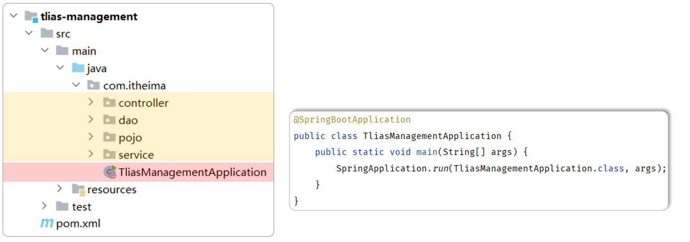
所以，我们在项目开发中，只需要按照如上项目结构，将项目中的所有的业务类，都放在启动类所在包的子包中，就无需考虑组件扫描问题。
DI详解
通过上述的ICO操作 , 拿到上一层创建好的数据打包后的容器 利用DI 操作对上面新创建的变量直接赋值进入下方 的流操作 ;
上一小节我们讲解了控制反转IOC的细节，接下来呢，我们学习依赖注解DI的细节。
依赖注入，是指IOC容器要为应用程序去提供运行时所依赖的资源，而资源指的就是对象。
在入门程序案例中，我们使用了@Autowired这个注解，完成了依赖注入的操作，而这个Autowired翻译过来叫：自动装配。
@Autowired注解，默认是按照类型进行自动装配的（去IOC容器中找某个类型的对象，然后完成注入操作）
入门程序举例：在EmpController运行的时候，就要到IOC容器当中去查找EmpService这个类型的对象，而我们的IOC容器中刚好有一个EmpService这个类型的对象，所以就找到了这个类型的对象完成注入操作。
@Autowired用法
会从代码的简洁性和代码的规范性的要求来实现自己的使用方法 ;
@Autowired 进行依赖注入，常见的方式，有如下三种：
1). 属性注入
@RestController
public class UserController {
//方式一: 属性注入 : 内部容器
@Autowired
private UserService userService;
}
- 优点：代码简洁、方便快速开发。
- 缺点：隐藏了类之间的依赖关系、可能会破坏类的封装性 ( 底层是利用反射来实现赋值传输数据 ) 。
2). 构造函数注入
@RestController
public class UserController {
//方式二: 构造器注入 //自己创建一个类构造器来实现这个对象 ;
private final UserService userService; //常量,一旦注解不会发生改变;
//当容器中实现的有两个对象时,无法直接调用简单的Autowired来实现构造 ;
@Autowired //如果当前类中只存在一个构造函数, @Autowired可以省略
public UserController(UserService userService) {
this.userService = userService;
}
}
- 优点：能清晰地看到类的依赖关系、提高了代码的安全性。
- 缺点：代码繁琐、如果构造参数过多，可能会导致构造函数臃肿。
- 注意：
- 如果只有一个构造函数，@Autowired注解可以省略。（通常来说，也只有一个构造函数）
- 可以直接获取到需要的上一层文件的结果 , 直接运行到下一层 ;
3). setter注入
/**
* 用户信息Controller
*/
@RestController
public class UserController {
//方式三: setter注入
private UserService userService;
@Autowired
public void setUserService(UserService userService) {
this.userService = userService;
}
}
- 优点：保持了类的封装性，依赖关系更清晰。
- 缺点：需要额外编写setter方法，增加了代码量。
在项目开发中，基于@Autowired进行依赖注入时，基本都是第一种和第二种方式。（官方推荐第二种方式，因为会更加规范）但是在企业项目开发中，很多的项目中，也会选择第一种方式因为更加简洁、高效（在规范性方面进行了妥协）。
注意事项
那如果在IOC容器中，存在多个相同类型的bean对象，会出现什么情况呢？
在下面的例子中，我们准备了两个UserService的实现类，并且都交给了IOC容器管理。 代码如下：
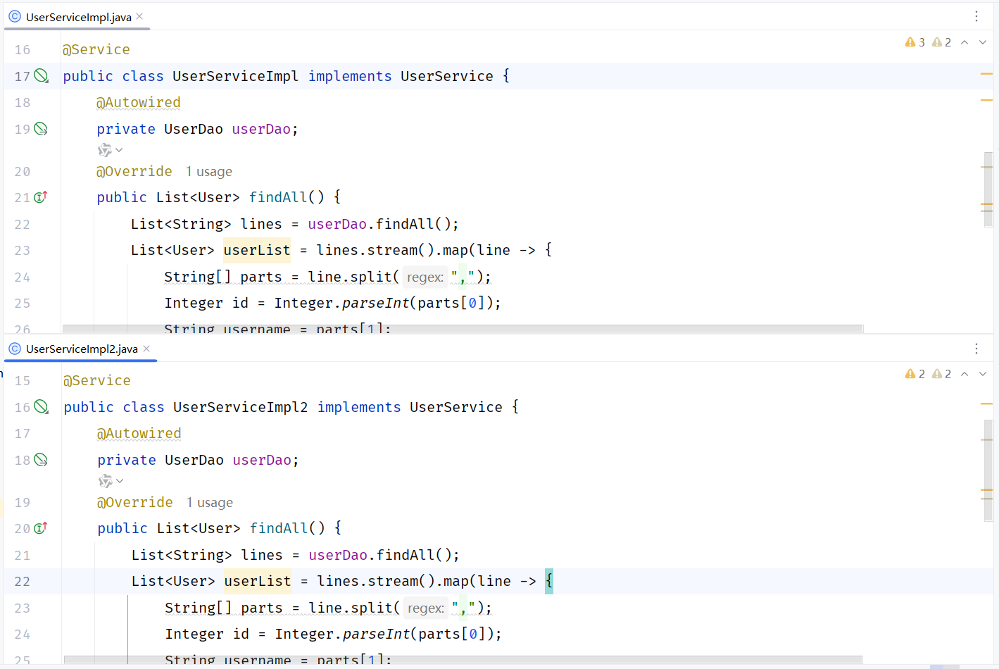
此时，我们启动项目会发现，控制台报错了：
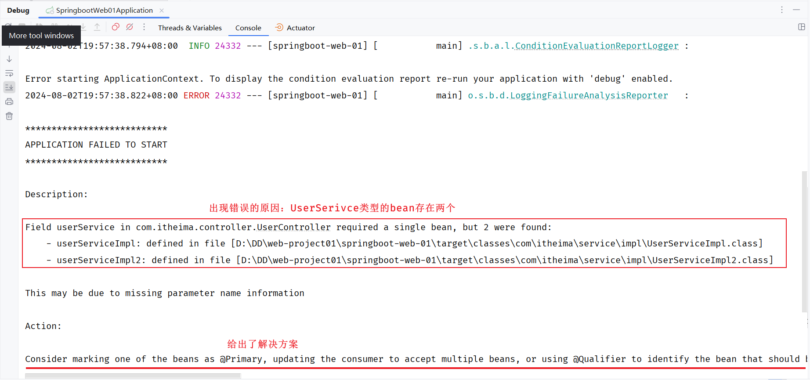
出现错误的原因呢，是因为在Spring的容器中，UserService这个类型的bean存在两个，框架不知道具体要注入哪个bean使用，所以就报错了。
如何解决上述问题呢？Spring提供了以下几种解决方案：
- @Primary
- @Qualifier
- @Resource
方案一：使用@Primary注解
其他没有优先级 的存在不消失 但是没用, 其他可以使用下面的标签来实现 ;
当存在多个相同类型的Bean注入时，加上@Primary注解，来确定默认的实现。( 底层实现提高优先级 )
@Primary
@Service
public class UserServiceImpl implements UserService {
}吗
方案二：使用@Qualifier注解
指定当前要注入的bean对象。 在@Qualifier的value属性中，指定注入的bean的名称。 @Qualifier注解不能单独使用，必须配合@Autowired使用。 创建是在调用容器中的对象的时候实现的 添加后面加 ( " " ) 类名到达容器后首字母会变成小写;
@RestController
public class UserController {
@Qualifier("userServiceImpl")
@Autowired
private UserService userService;
方案三：使用@Resource注解
是按照bean的名称进行注入。通过name属性指定要注入的bean的名称。( 直接放置在调用的实现前面就行 )
@RestController
public class UserController {
@Resource(name = "userServiceImpl")
private UserService userService;
面试题：@Autowird 与 @Resource的区别
- @Autowired 是spring框架提供的注解，而@Resource是JDK提供的注解
- @Autowired 默认是按照类型注入，而@Resource是按照名称注入
常见状态码
状态码 | 英文描述 | 解释 |
200 | OK | 客户端请求成功，即处理成功，这是我们最想看到的状态码 |
302 | Found | 指示所请求的资源已移动到由Location响应头给定的 URL，浏览器会自动重新访问到这个页面 |
304 | Not Modified | 告诉客户端，你请求的资源至上次取得后，服务端并未更改，你直接用你本地缓存吧。隐式重定向 |
400 | Bad Request | 客户端请求有语法错误，不能被服务器所理解 |
403 | Forbidden | 服务器收到请求，但是拒绝提供服务，比如：没有权限访问相关资源 |
404 | Not Found | 请求资源不存在，一般是URL输入有误，或者网站资源被删除了 |
405 | Method Not Allowed | 请求方式有误，比如应该用GET请求方式的资源，用了POST |
428 | Precondition Required | 服务器要求有条件的请求，告诉客户端要想访问该资源，必须携带特定的请求头 |
429 | Too Many Requests | 指示用户在给定时间内发送了太多请求（“限速”），配合 Retry-After(多长时间后可以请求)响应头一起使用 |
431 | Request Header Fields Too Large | 请求头太大，服务器不愿意处理请求，因为它的头部字段太大。请求可以在减少请求头域的大小后重新提交。 |
500 | Internal Server Error | 服务器发生不可预期的错误。服务器出异常了，赶紧看日志去吧 |
503 | Service Unavailable | 服务器尚未准备好处理请求，服务器刚刚启动，还未初始化好 |
响应状态码
状态码分类 | 说明 |
1xx | 响应中 --- 临时状态码。表示请求已经接受，告诉客户端应该继续请求或者如果已经完成则忽略 |
2xx | 成功 --- 表示请求已经被成功接收，处理已完成 |
3xx | 重定向 --- 重定向到其它地方，让客户端再发起一个请求以完成整个处理 |
4xx | 客户端错误 --- 处理发生错误，责任在客户端，如：客户端的请求一个不存在的资源，客户端未被授权，禁止访问等 |
5xx | 服务器端错误 --- 处理发生错误，责任在服务端，如：服务端抛出异常，路由出错，HTTP版本不支持等 |
关于响应状态码，我们先主要认识三个状态码，其余的等后期用到了再去掌握：
200 ok客户端请求成功404 Not Found请求资源不存在500 Internal Server Error服务端发生不可预期的错误